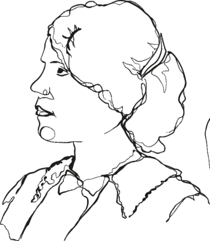

Maria Augusta RestoBar
A proposta do Maria Augusta RestoBar é ser um Restaurante Bar (como o título diz) aconchegante e informal, agradável e despojado, reconhecido e acessível, de maneira a unir os lados da mesma rua para todos os públicos democraticamente. Vale dizer que parte da proposta deste projeto é lançar alguma luz
sobre protagonistas femininas da história que foram esquecidas,
relegadas ou mesmo apagadas.
Muitas fizeram história e hoje somos todas que continuamos a fazê-la
com a inspiração de tantas que nos antecederam.
Leia, reflita e lute! Este é o caminho para construirmos um futuro com
igualdade para todas, assim como um dia minha mãe abriu o caminho,
eu sigo trilhando e minha filha seguirá adiante.
A todas às Marias.

Sebastiana de Melo Freire - Dona Yayá
Filha de uma família aristocrática paulista, perdeu seus parentes próximos em sucessivas tragédias. Pelo tempo que pode aproveitar da herança, promoveu diversos saraus e montou um estúdio fotográfico em sua própria casa, no bairro do Bixiga. A alegação era incapacidade mental por seus tutores, mas algumas releituras da sua biografia apontam que fora vítima incompreendida da moral da época.
Carolina de Jesus
Foi a publicação do seu diário de vida que a destacou como escritora e a tornou uma das mais importantes escritoras brasileiras, inclusive uma das primeiras mulheres negras a ser reconhecida como escritora. Antes do reconhecimento era catadora de papéis, profissão da qual sustentou 3 filhos.
Inezita Barroso
Nascida da capita, no dia 04 de março de 1925, Ignez Magdalena Barroso foi uma importante cantora, atriz, bibliotecária, folclorista, professora e apresentadora. Ganhou o título de Honoris Causa em folclore. Deixou um legado de força e determinação, sendo uma das primeiras mulheres a interpretar a música caipira no Brasil e administrar um programa de TV de auditório em plena década de 80.
Anália Franco
Professora por formação e ativista social que atuou em diversas frentes. Na conta somam a fundação de 70 escolas, 23 orfanatos e diversas instituições, a partir da sua atuação, como oficinas de trabalho, uma orquestra feminina e uma instituição de auxílio às mulheres. Também era jornalista, poetisa, escritora e filantropa brasileira.
Pérola Elis Byigton
Pérola destacou-se no combate à mortalidade infantil e aos cuidados com as mulheres durante 33 anos. Liderou um seção da cruz vermelha nos EUA, além de diversas benfeitorias aos menos favorecidos, sobretudo crianças.
Bartira
Indígena casada com português por volta de 1515, é considera a grande mãe dos paulistas por unir os dois 'mundos' e de ser a progenitora das primeiras famílias tradicionais de São Paulo. Possibilitou um desenvolvimento pacífico e próspero da colônia.
Iracema Arditi
Pintora Naif (autodidata), paulista que fundou o primeiro museu para pintores como ela na América Latina. Realizou diversas exposições no Brasil e no exterior. Suas obras ganharam notoriedade e reconhecimento no mundo todo, uma pintura idílica, leve e pura.
Maria Auxiliadora da Silva
Pintora Autodidata que retratou temas pouco explorados na pintura da época, como as religiões afro brasileiras. Além disso, representou o carnaval, festas e celebrações da nossa cultura. Iniciou a vida como doméstica, passadeira e bordadeira, para dedicar-se à pintura somente aos 32 anos. Recebeu reconhecimento póstumo internacional para, então, ser reconhecida no Brasil.